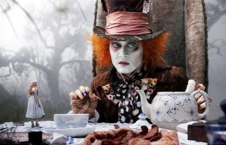
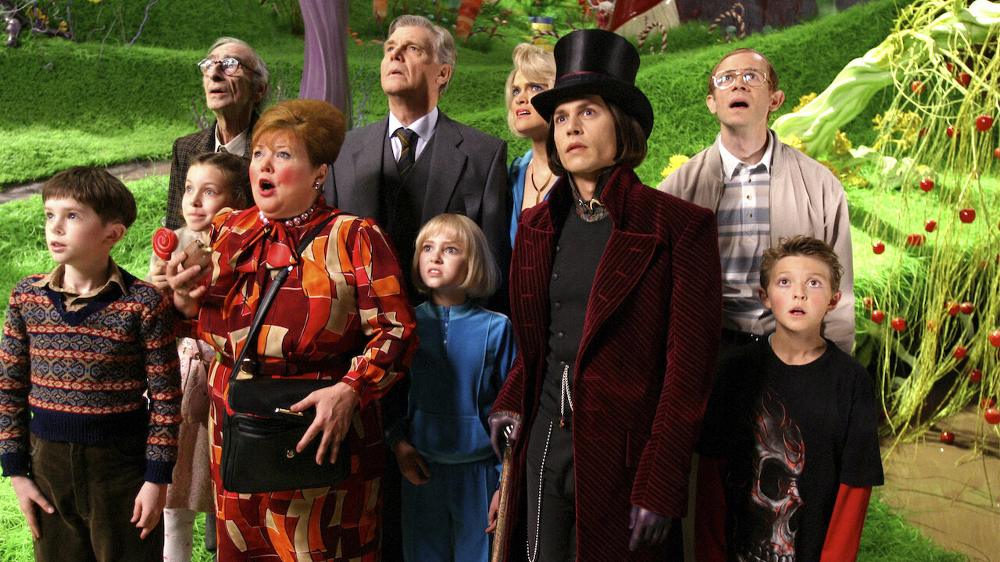
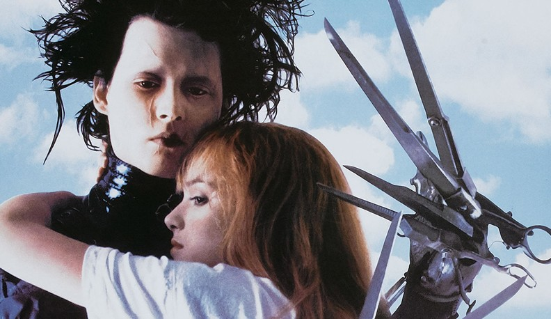
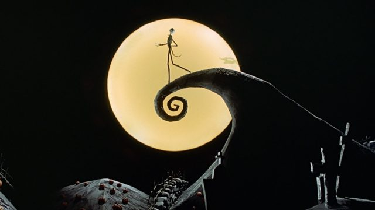

TIM BURTON, EL GENIO DE LO EXTRAÑO

USO DEL COLOR
El color es un elemento imprescindible para la cinematografía desde el punto de vista del lenguaje, ya que ayuda a expresar una idea. Como hemos dicho anteriormente, el mundo dividido es un recurso típico en el cine de Burton y hace uso del color y de fuertes contrastes para crear una distinción de forma visual y efectiva entre esos dos mundos que utiliza. Por ello, el color en sus películas es de dos tipos:
El mundo siniestro, plagado de extrañas criaturas de apariencia terrorífica, es representado con una paleta de color muy oscura de tonos fríos que remiten a las películas del cine en blanco y negro, destacando sobre todo los colores negros y grises, pero también los índigos, verdes y rojos. (Alicia en el País de las Maravillas o Sleepy Hollow)
El mundo fantástico, caracterizado por ambientes luminosos para los que usa tonos pasteles y blancos contrastados con colores muy llamativos. Antes de entrar a la fábrica de chocolate, el mundo de Charlie se presenta con tonos grises, azules apagados y marrones, reflejando la pobreza y la monotonía de su vida cotidiana. Este esquema cromático enfatiza la tristeza y dureza de su entorno. La casa de los Bucket, por ejemplo, utiliza una paleta desaturada que refuerza la precariedad económica de la familia.
Este contraste entre dos mundos se puede apreciar, entre muchos otros de su filmografía, en la película Eduardo Manostijeras: en lo alto de la colina, está la mansión donde vive Eduardo, oscura y tétrica, mientras que abajo, el vecindario se caracteriza por casas llenas de color.
Mediante este contraste trata de hacer más atractivos los mundos fantásticos, pero por supuesto, los personajes también cumplen estos requisitos. Los colores producen estados anímicos diferentes y sirven para reflejar la compleja psicología del protagonista, muy distinta a la de la sociedad que le rodea.
También se puede observar en Pesadilla antes de Navidad, donde las diferencias entre los dos mundos son más que evidentes; el hogar de Jack, el protagonista, es un oscuro cementerio, siento todo lo contrario a la ciudad de la Navidad a la que viaja, donde el colorido y el color blanco de la nieve impregnan la escena. Podemos ver que incluso su estado de ánimo es distinto según en el lugar en el que se encuentra.
Para poner los elementos anteriores en escena, Burton utiliza recursos como son los decorados, la iluminación o el vestuario. Cumplen un papel fundamental porque reflejan el mundo interior del personaje principal y también ayudan a establecer el clima de la película.